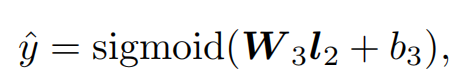

经典推荐模型:FNN，DeepFM
之前我们已经介绍了FM模型，在进入深度学习时代后，通过将FM模型与深度学习模型进行结合，产生了许多有用的新模型，本文将介绍其中的两种：FNN和DeepFM.
FNN
FNN的结构如下：
结构很简单，在底层将多个特征域中的稀疏向量进行了Embedding，然后将Embedding的结果输入到全连接层进行特征交叉，最后输出预测结果。
FM模型为每一个特征学习了一个隐向量，两个特征交叉得到的新特征的系数等于这两个特征对应隐向量的内积。
而FNN直接将训练好的FM的权重(一阶特征权重+隐向量)拿了过来，作为自己的Embedding层的初始化权重。
只考虑隐向量，假设某特征域的总类别数为n，隐向量(Embedding的维度)是k，那么在 FM中，每一个类别特征对应一个长度为k的隐向量，因此总的隐向量可以用一个n*k的矩阵来表示；在FNN的Embedding层中，某特征域的总类别数为n，Embedding层的神经元个数为k，于是Embedding层的参数也可以用一个n*k的矩阵来表示。
具体对应关系如下图：
注意，虽然箭头指向了神经元，但表示的是被指向的神经元与输入神经元之间的权重。
自底向上，用数学公式描述FNN的结构：


其中，
$w_0$是一个全局的标量。
$z_i$是第i个特征域在FM中对应的参数，包括一阶特征权重$W_i$与隐向量$v_i$, $K$是隐向量(Embedding)的维度。
$start_i$和$end_i$代表第$i$个特征域中不同类别数，假设为$m$，$W_0^i$的维度为$(K+1)*m$，两者做矩阵乘法得到一个长度为$K+1$的向量，正是$z_i$.
DeepFM
在之前介绍的Wide&Deep中，Wide部分是一个广义的线性模型，不具备特征交叉能力，因此需要人工做特征交叉。
DeepFM将Wide&Deep的Wide部分替换成了FM，其余不变。FM能够进行二阶的特征交叉，从而实现了Wide部分的自动特征交叉。
DeepFM的网络结构如下：
在原始的FM中，隐向量是需要单独学习的，而在DeepFM中，左侧FM部分的隐向量就是输入特征Embedding后的结果。换句话说，FM部分和Deep部分共享相同的 Embedding 层。
将FM部分和Deep部分的输出结果加起来，经过Sigmoid映射得到最终的预测结果：
以上。
参考：
- [1] FNN论文: http://www0.cs.ucl.ac.uk/staff/w.zhang/rtb-papers/deep-ctr.pdf
- [2] DeepFM论文:https://arxiv.org/pdf/1703.04247.pdf
- [3] https://www.bilibili.com/video/BV1764y1R72V?spm_id_from=333.999.0.0
- [4] 王喆-《深度学习推荐系统》